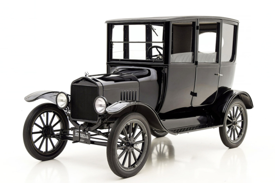
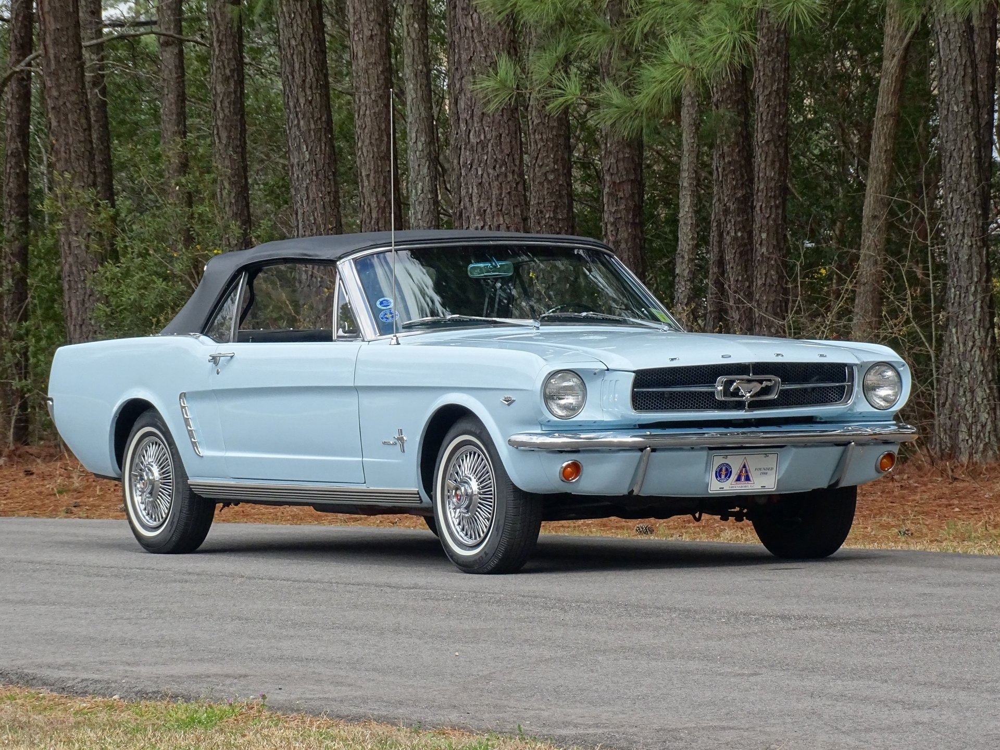
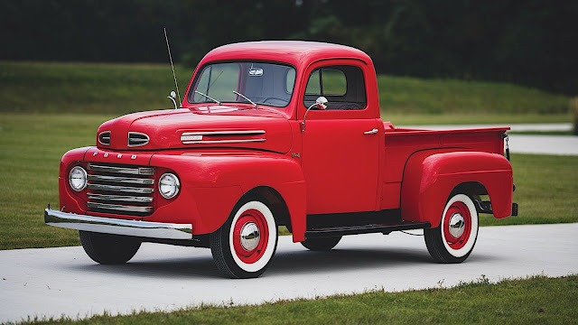

FORD MOTOR COMPANY
CARROS LENDÁRIOS DA MARCA:
A Ford possui um vasto acervo de veículos que revolucionaram a indústria e marcaram época no Brasil e no mundo. Desde a democratização do automóvel até ícones de luxo e esportividade, a marca moldou gerações de motoristas. Os modelos mais emblemáticos que construíram a trajetória da montadora incluem:
ÍCONES GLOBAIS:
- MODEL-T (1908): Conhecido no Brasil como "Ford Bigode", foi o primeiro carro produzido em massa no mundo, revolucionando a mobilidade e o acesso aos veículos.

- MUSTANG (1964): O famoso "pony car" que definiu uma era de esportividade e desempenho com seu design inconfundível.

- F-SERIES (1948): A linha de picapes mais vendida dos Estados Unidos, sinônimo de força e robustez.

CLÁSSICOS QUE MARCARAM O BRASIL
- MAVERICK (1973): Um esportivo lendário que se tornou objeto de desejo e marcou a cultura automotiva nacional com seu motor V8.
- CORCEL (1968): Modelo de muito sucesso que equilibrava economia, robustez e elegância para as famílias brasileiras.
- ESCORT (1983): Carroceria hatchback muito popular, que trouxe inovação e versões esportivas marcantes nos anos 80 e 90.